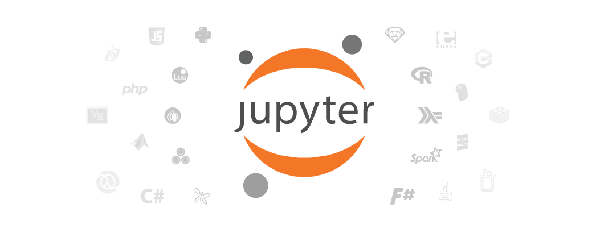

Jupyter Markdown单元格
环境配置
标题分级
Markdown语言
通过#符号来分级
# 一级标题
## 二级标题
### 三级标题
#### 四级标题
##### 五级标题
效果： 通过#符号来分级
一级标题
二级标题
三级标题
四级标题
五级标题
特殊字符
- 用
来换行或者空两个加回车 - 用反向逗号`(esc按键下一行)输入代码或符号
- 用反斜杠\来转义字符
引用文本
Markdown语言
> 这段文字以>开头，将会高亮，
效果：
这段文字以>开头，将会高亮，
添加图片
Markdown语言

效果：

文本超链接
Markdown语言
[Jupyter 官网](https://link.jupyter.org)
效果：
图片超链接
Markdown语言
[http://www.jupyter.org](./images/logo.png)
效果：
列表
无序列表
用+或-后边加空格来表示
Markdown语言
- A
- B
- C
效果：
- A
- B
- C
分割线
Markdown语言
-----
*****
效果：
强调
Markdown语言
斜体：*斜体部分*来达到斜体效果，黑体：**黑体加粗部分**来达到黑体加粗效果
效果：
斜体：斜体部分，黑体：黑体加粗部分
插入代码
插入一段代码需要三个反向逗号```进行包裹
Markdown语言
```python
%matplotlib inline
import matplotlib.pyplot as plt
import numpy as np
x = np.arange(20)
y = x**2
```
效果：
%matplotlib inline
import matplotlib.pyplot as plt
import numpy as np
x = np.arange(20)
y = x**2
注意:不同类别的语言的代码应进行指定方能正常高亮显示。
插入表格
Markdown语言
| 左对齐标题 | 右对齐标题 | 居中对齐标题 |
| :------| ------: | :------: |
| 短文本 | 中等文本 | 稍微长一点的文本 |
| 稍微长一点的文本 | 短文本 | 中等文本 |
效果：
| 左对齐标题 | 右对齐标题 | 居中对齐标题 |
|---|---|---|
| 短文本 | 中等文本 | 稍微长一点的文本 |
| 稍微长一点的文本 | 短文本 | 中等文本 |
注意:表格的语句上一行必须为空行，不然表格不生效。